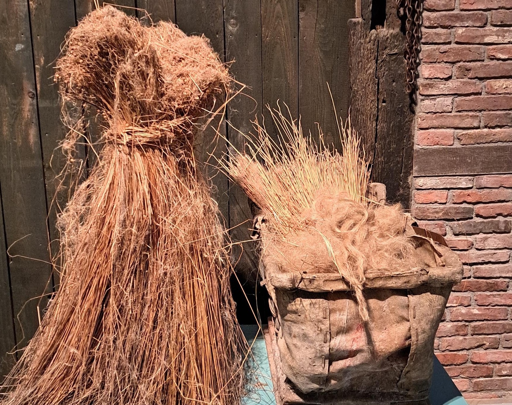

Vlaskapelletje
Vlaskapelletje
Je ziet hier een vlaskapelletje.
Voor het drogen van vlas werd het meestal rechtop gezet, dan heet het een kapelletje.
Vlas groeit bijna overal, dus op de arme Twentse grond was het een makkelijk gewas.
Het werd vooral verbouwd voor linnen, voor lakens, kleren en andere stoffen.
Uit de stengels werden de vezels gehaald.
In de kist naast het vlaskapelletje kun je de vezels zien liggen; ze voelen een beetje als haar.
In de vlaszaadbol zitten de lichtbruine zaadjes.
Daar maakte men lijnzaadolie van, dat werd gebruikt om hout te beschermen tegen weer en wind.
Maar lijnzaad en koudgeperste olie werden ook gegeten, bijvoorbeeld in de vastentijd als vervanger van vlees.
Er bestaan twee soorten vlas: vezelvlas voor linnen en het kortere olievlas voor olie.
Vezelvlas kan ook voor olie gebruikt worden, maar geeft veel minder dan olievlas.
Het getal 100 speelt een belangrijke rol bij vlas.
Het zaaien gebeurde rond de honderdste dag van het jaar.
In juni bloeide het met kleine blauwe bloempjes.
Honderd dagen na het zaaien kon het vlas worden geoogst.
De hele plant werd met wortel uit de grond gehaald, omdat de vezel tot in de wortels doorloopt.
Zo kreeg men lange vezels om textiel van te maken.
Leuk weetje: in de eerste versies van Doornroosje prikte ze zich niet aan een spinnenwiel, maar aan een strootje.
Vlasstrootjes zijn harde stukjes van de stengel.
In het volgende verhaal lopen we het Los Hoes in.
Rechtsboven op de plank, onder de zolder, zie je vijf werktuigen die gebruikt werden om vlas tot garen te maken.
Wil je meer weten over vezelvlas? Kijk dan in de Atlas van Ooit.
